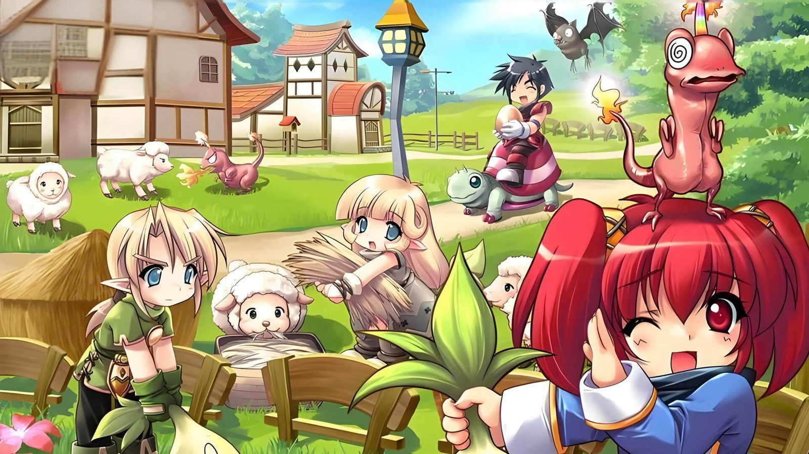
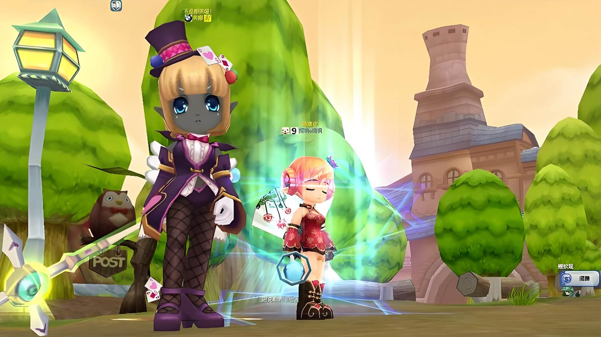
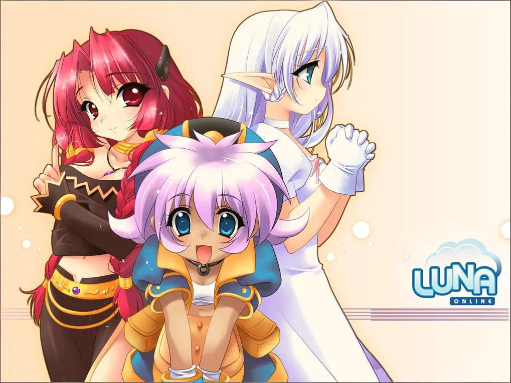

奇幻冒险 · 自由转职
露娜2：拾光之约
《露娜2》正统续作 PC 端游：自由转职、社交满格，把经典的地图与养成系统原汁原味带回来。12 月 10 日公测——开服前把魔附、摆摊、挂机与转职加点先看明白，上线直接照着做。
--天
--时
--分
--秒
平台PC 端游
公测2026.12.10 暂定 · 以官方公告为准
特色自由转职 / 社交满格 / 原汁原味
资质资质名称：露娜2
获取游戏 · 开服咨询
露娜2：拾光之约 · 全部 7 篇
公测首批攻略聚焦四大系统：魔附养成、摆摊交易、挂机辅助、转职加点。开服后按实际版本持续更新。
月01魔附系统怎么玩：宝石数量决定成败魔附是露娜2 里装备成型的核心一环：选对材料、攒够宝石，比点十次手快更有用。阅读约 3 分钟 · 4 节 · 更新于 2026-11-09月02摆摊开店全流程：贩卖与购入怎么选从技能栏到定价确认一共四步。开店容易，把东西卖出去靠的是定价对照。阅读约 2 分钟 · 4 节 · 更新于 2026-11-09月03挂机辅助设置全拆解：两页选项各管什么挂机不是点个按钮就走。移动还是定点、复活回哪、技能什么顺序，这四项决定了你睡一觉起来涨了多少。阅读约 2 分钟 · 4 节 · 更新于 2026-11-09月04法师修士转职加点：1 转技能取舍与 2 转任务技能训练窗口里每一级都要真金白银的 SP 和金币。法师修士两系怎么点、2 转任务在哪接，这一篇说清。阅读约 3 分钟 · 5 节 · 更新于 2026-11-09月05职业怎么选：战士游侠法师修士各有各的玩法四个基础职业对应四种完全不同的节奏。选职业不是选强度，是选你每天愿意重复的那套操作。阅读约 2 分钟 · 3 节 · 更新于 2026-11-10月06世界 BOSS 与稀有怪：刷新规律与捡漏技巧BOSS 掉的不只是装备，还有全服关注的稀有材料。摸清刷新节奏，散人也能从大佬嘴里分一口。阅读约 2 分钟 · 4 节 · 更新于 2026-11-10月07社交玩法盘点：好友组队与牵手结婚系统露娜2 的社交不是摆设：组队有加成、好友有交互、牵手结婚还有专属玩法。会用社交系统的玩家，升级永远快人一步。阅读约 2 分钟 · 4 节 · 更新于 2026-11-10
《露娜2：拾光之约》为官方宣传名称，审批备案名称（资质名称）为「露娜2」。公测时间暂定 2026 年 12 月 10 日，如有调整以官方公告为准。
官方图集
官网宣传原画与实机画面：萌系画风先睹为快。图片版权归原厂商所有。


